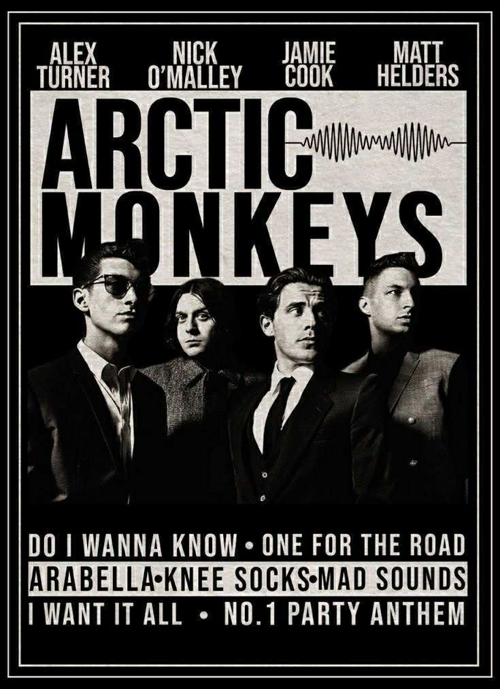
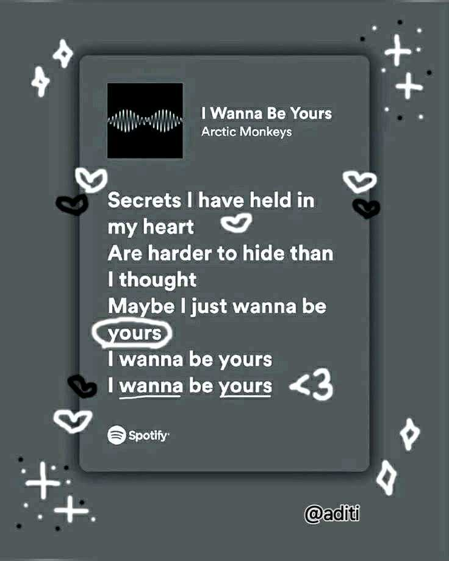

Arctic Monkeys formed in High Green, Sheffield, in 2002, consisting of Alex Turner, Matt Helders, Jamie Cook, and Andy Nicholson. They gained a passionate following through free demos given away at gigs and shared online, which led to their signing with Domino Records and the meteoric success of their 2006 debut album, Whatever People Say I Am, That's What I'm Not, which became the fastest-selling debut in British history. The band's lineup later solidified with the addition of Nick O'Malley on bass, succeeding Nicholson. Arctic Monkeys are known for their dynamic sound, evolving from energetic indie rock to a more refined and experimental style over their extensive career, marked by numerous award wins and a consistent presence in the music world.
Oasis's notable works include iconic albums like Definitely Maybe (1994) and <<(what's the story) Morning Glory?>> (1995), as well as popular songs such as "Wonderwall," "Don't Look Back in Anger," "Champagne Supernova," and "Supersonic". Their career also includes high-profile live performances, such as their massive Knebworth concerts in 1996, which were the largest outdoor concerts in UK history at the time.
 I chose this band because they’re one of my dad’s and my favorites. I’ve always had a love for old songs, especially their track Wonderwall. It’s not just about the song itself—it carries such a strong nostalgic feeling every time I listen to them. I know that at my age, it’s rare to still appreciate their music, and that makes my connection to the band even more meaningful.